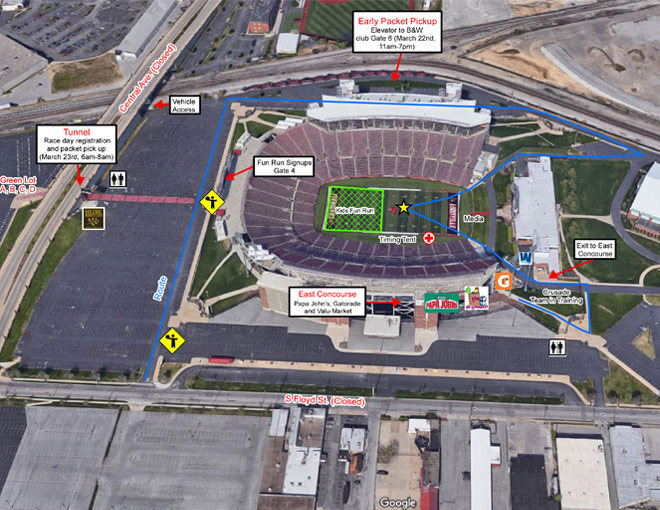
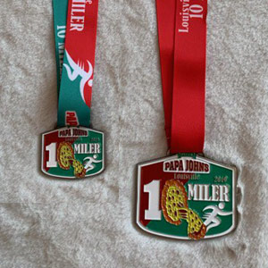
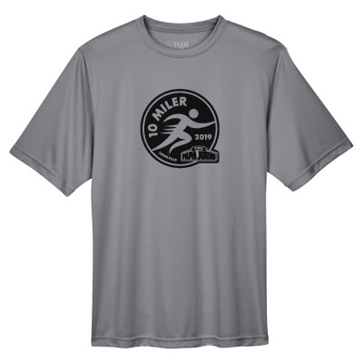

Information
Go To
| Seeding | Training | Expo | Running Premiums | Street Closures |
| Parking | Travel/Hotels | Sweats Shuttle | Awards | Divisions |
Race Day Schedule - Saturday, March 23, 2019
(at the Cardinal Walk Tunnel between the Green and Bronze Lots)
Seeding
To be considered for a seeded position in the Papa John's 10 Miler, please submit proof of your race time by February 1, 2019 to:
You may email your request to:
River City Races
Website: www.rivercityraces.com
Qualifying Time Requirements:
Men: 1:05:00
Women: 1:20:00
To qualify, race results must be from 2017 or 2018 races. If you completed the 2018 Papa John's 10 Miler, you will automatically be considered for, but not guaranteed, a seeded position. If you've recently finished a ten-mile race with a better time than you achieved at the 2018 Papa John's 10 Miler, please submit proof of your race time(s) to better your chances of receiving a seeded position. Runners who are granted a seeded position will be given bib numbers 1-200 and will line up nearest the starting line.
Training
Once again, Fleet Feet Sports Training Programs are gearing up. They have many options and programs to offer.Fleet Feet Sports traditional free program gives you a training framework and guidelines to participate in the Louisville Triple Crown of Running and other marathons and half-marathons. Also included are group runs from the store on Wednesday evenings and Saturday mornings featuring a variety of training routes for that week's training.
CLICK HERE for visit the training section.
Expo
Papa John's 10 Miler Expo, Packet Pickup and Race Registration
Brown & Williamson Club, Gate 6
Cardinal Stadium
2800 South Floyd Street
Louisville, KY 40209
Friday, March 22, 2019
Time: 11 AM - 7 PM
The entrance is near Gate 6, on the West side of the stadium, near the railroad tracks. Take the elevator to the 3rd floor.
Vendors should use the Freight Elevator, near Gate 8, for loading/unloading.
For more information on how to purchase booth space at the Expo, please contact Peggy Kilgore at
(502) 558-1465 or via e-mail at peggyk323@gmail.com. Proceeds benefit the YMCA of Greater Louisville.

Running Premiums


Other refreshments provided for the runners, by our generous sponsors listed below:
- Louisville Pure Tap Water
- Aquafina Water
- Heine Brothers Coffee
- Gatorade Beverage
- Papa John's Pizza
- Fruit from ValuMarket
- Race Photographs
Street Closures
ROUTE:
South on 3rd Street from Central Avenue to
Southern Parkway to,
Left (South) on New Cut Road to,
Right (West) into Iroquois Park at the Amphitheater Parking lot
Runners will enter the park & travel through the park clockwise
Left on Rundill Road (Road that circles inside Iroquois Park.)
Exiting the Iroquois Park at New Cut Road and Southern Parkway
North on Southern Parkway to,
North on 3rd Street to,
Right (East) on Central Avenue to,
Left (North) on Floyd Street to,
Left into Cardinal Stadium.
No on-street parking will be permitted on Third Street from Heywood Avenue to Southern Parkway from 5:00 AM until Noon.
6:30 AM to 12:30 PM
Central Avenue from Third Street to Fourth Street
Central Avenue from Floyd Street to Third Street (Central Station traffic only)
Third Street from Central Avenue to Southern Parkway
7:00 AM to Noon
Southern Parkway from Florence Avenue to Southern Heights Avenue
Southern Parkway from Third Street to Florence Avenue
Southern Parkway from Southern Heights Avenue to New Cut Road/Taylor Blvd.
7:30 AM to 12:30 PM
Floyd Street from Central Avenue to Boxley Avenue
8:00 AM to 11:00 AM
Taylor Blvd. from Huntoon Avenue to Southern Parkway
New Cut Road from Southern Parkway to Palatka Road
Iroquois Park (All Park Streets)
Stadium Map

Click here to download a PDF of the stadium map.
Parking
Complimentary parking is available in most lots outside of the Cardinal Stadium, where the race finishes. Parking is available in the Green Parking Lots only at Cardinal Stadium.
Traffic and parking lot diagrams for race day, Saturday, March 23, 2019, are below that include the T Lot on the SE corner of Floyd and Central. Please DO NOT park in the D/E/J Lots during Race Day.
For more details, please click here to view and download the parking lots map.

PLEASE NOTE: If you park inside the stadium, you will NOT be able to leave the parking area until after the race is over and the roads are re-opened. The racecourse includes Floyd Street where all stadium parking enters and exits. Click the "Course" Tab for more information.
Exiting Cardinal Stadium after the Race

Churchill Downs
We suggest that you park at Churchill Downs. The lot at Churchill Downs, including in front of the Kentucky Derby Museum, will be open, for free.
University of Louisville
Complimentary parking is available in the "Green" lot only at Cardinal Stadium. There are four (4) exits from the Green lot that will take you to Floyd Street; then turn Right on Floyd to Crittenden.
IMPORTANT: The "BRONZE Lot" at the stadium is not available for parking. If you park in the Red Lot, you won't be allowed to leave until after the race, which will be after 11:30 AM or when the roads are re-opened.
Lots at the corner of Floyd and Warnock Streets will also be open for parking. You may wish to park in the University's parking garage on Floyd Street, located north of the stadium. However, this is a "pay" parking facility.
Central Station/KrogerPlease do not park in the Central Station/Kroger lot on the southeast corner of Third Street and Central Avenue. Cars are subject to be towed from this location.
Additional Parking OptionsAmple street parking is available both north and west of Cardinal Stadium. Please consider carpooling to the Papa John's 10 Miler and allow yourself plenty of time to park and walk to the start line. The race begins at 8:00 AM.
Travel/Hotels
| Hotels | |
| Hilton Garden Inn – Airport 2735 Crittenden Drive Louisville, Kentucky, USA, 40209 (502) 637-2424 www.hiltongardeninnlouisvilleairport.com 0.6 mile from race start |
Courtyard by Marriott Louisville Downtown 819 Phillips Lane Louisville, KY 40209 (866) 602-9307 www.marriott.com 1.72 miles from race start |
| The Brown Hotel 335 West Broadway Louisville, KY 40202 (502) 583-1234 www.brownhotel.com 3.33 miles from race start |
Galt House Hotel & Suites 140 North 4th Street Louisville, KY 40202 (502) 589-5200 www.galthouse.com 4.13 miles from race start |
| Econo Lodge Airport 6109 Preston Highway Louisville, KY 40219 (502) 966-5445 www.econolodge.com 5.28 miles from race start |
Best Western Airport East 1921 Bishop Lane Louisville, KY 40218-1901 (502) 456-4411 www.bestwesternkentucky.com 5.43 miles from race start |
| Fern Valley Hotel & Conference Center 2715 Fern Valley Rd Louisville, KY 40213 (502) 964-3311 www.fernvalleyhotel.com 5.75 miles from race start |
|
Gear | Sweats Shuttle
 A Sweats Shuttle will be located at the Start Area taking bags (which must be pre-labeled with your name and phone number) until 8:00 AM. The shuttle will be parked at the Bronze Lot for your bag retrieval.
A Sweats Shuttle will be located at the Start Area taking bags (which must be pre-labeled with your name and phone number) until 8:00 AM. The shuttle will be parked at the Bronze Lot for your bag retrieval.
Awards
2019 Commemorative Medals
Each participant crossing the finish line will be given a commemorative medal at the Finish Line.
Commerative Plate
Since 2010, the world-renowned Louisville Stoneware Company has provided a one-of-a-kind trophy to be awarded to the male and/or female who wins all three of the Triple Crown runs/walks. Gnoc Phan's trophy creation, which is displayed at all three race packet pickups, adds to the excitement of the series for all the participants and race directors.
 Then, in 2013, the famous pottery artists approached the ever-growing race series with another unique idea from the owners of Louisville Stoneware: award plates for the individual race winners in the male, female and wheelchair divisions. These stunning plates will also be on display at the packet pickup locations alongside the overall winner trophy.
Then, in 2013, the famous pottery artists approached the ever-growing race series with another unique idea from the owners of Louisville Stoneware: award plates for the individual race winners in the male, female and wheelchair divisions. These stunning plates will also be on display at the packet pickup locations alongside the overall winner trophy.
For more information on Louisville Stoneware and its lengthy, rich, artistic tradition in the Derby City, go to www.louisvillestoneware.com.
Each participant will receive a tech race shirt commemorating their participation in the 2019 Papa John's 10 Miler.
Sizes: UNISEX from XS to 2X
Color: Sport Graphite

10 Miler race shirts will be available at packet pickup/late registration and during the Papa John's 10 Miler Expo on Friday, March 22, 2019 (11:00 AM - 7:00 PM) or on race morning, Saturday, March 23, 2019 (6:00 AM - 7:30 AM).
2019 Divisions
Papa John's 10 Miler will present cash awards to the below divisions only:
Cash Awards
| PLACE | MEN'S DIVISION | WOMEN'S DIVISION | WHEELCHAIR DIVISION |
| 1ST | $500 | $500 | $500 |
| 2ND | $250 | $250 | $250 |
| 3RD | $150 | $150 | $150 |
| 4TH | $125 | $125 | $125 |
| 5TH | $100 | $100 | $100 |
In addition, the top three finishers in EACH age division will also receive prizes. These awards will be mailed by or before May 10, 2019.
Due to recruiting deadlines, age groups 19 years and younger will NOT receive prizes, only congratulatory letters of accomplishment.
- First place winner in each division receives a $50 Papa John's gift card.
- Second place winner in each division receives a $25 Papa John's gift card.
- Third place winner in each division receives a $15 Papa John's gift card.
|
||||||||||||||||||||||